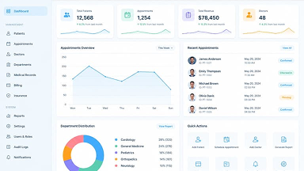
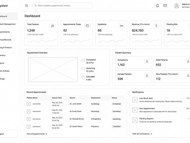
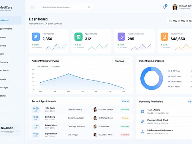

02, Project 01
NICN Clinic
HIS

Project Overview
A comprehensive Hospital Information System designed for NICN Clinic to manage patient data appointments, consultations, lab, pharmacy and reports in one secure platform.
My Role
UI/UX Designer
Timeline
12 Weeks
Tools
Figma, FigJam, Notion, Lucidchart
Users / Target Audience
Doctors, Nurses, Lab Technicians, Pharmacists, Administrators and Receptionists.
01 Project Overview
The goal of this project was to design an efficient, intuitive and secure Hospital Information System (HIS) that streamlines clinical workflows, improves patient care and provides real-time data for better decision making.
Problem / Challenge
- Manual processes causing delays and errors
- Scattered patient records and data duplication
- Inefficient appointment and queue management
- Difficulty tracking lab results and prescriptions
- Lack of real-time insights and reporting
02 Research
I used both qualitative and quantitative methods to understand users, their needs and frustrations.
Methods
- User Interviews
- Online Surveys
- Workflow Analysis
- Observation
Participants
- 8 Doctors
- 6 Nurses
- 4 Lab Staff
- 6 Pharmacists
- 5 Receptionists
03 Key Insights
- Users need quick access to patient history and real-time updates.
- Dashboard overview of key metrics is essential.
- Workflow automation can reduce administrative burden.
- Integrated modules improve collaboration and reduce errors.
04 User Pain Points
- Too many steps to complete common tasks.
- Switching between systems for lab, pharmacy and billing.
- Hard to find patient information quickly.
- No centralized reporting and analytics.
- Manual record keeping leads to mistakes.
05 Design Goals
- Simplify complex workflows.
- Provide real-time data and insights.
- Ensure data security and privacy.
- Improve collaboration across departments.
- Create a scalable and maintainable system.
06 My Approach / Process
I followed a user-centered design approach to ensure the solution is intuitive, efficient and impactful.
Understand
Research &
Empathy
Define
Problem &
Opportunities
Design
Ideation &
Solutions
Validate
Testing &
Feedback
Deliver
Polished &
Scalable
07 Key Modules
Core modules designed to cover all clinic operations.
Registration & Vitals
Capture patient details and vitals
Doctor Module
Consultations, diagnosis and treatment
Nurses Module
Patient care, observations and daily notes
Laboratory Module
Test requests, results and reports
Pharmacy Module
Prescription, dispensing and inventory
Reports & Analytics
Dashboard and insights for better decisions
08 Information Architecture
Organized structure to ensure scalability and ease of navigation.
NICN Clinic HIS
09 User Flow
Simplified flow of core consultation journey.
10 Wireframes
Low-fidelity wireframes to validate structure and flow.

11 Visual Design
Clean, modern design with a healthcare-focused color system.

12 Final Solution
A complete, polished product ready for real users.

13 Prototype
Interactive prototype to test the entire user journey.
View Prototype
14 Outcomes / Impact
50%
Reduction in manual processes
35%
Improvement in appointment management
80%
Faster access to patient information
90%
User satisfaction from clinic staff
100%
Secure and role-based access to data
15 Lessons Learned
- Involve end users early in the design process.
- Simplifying workflows leads to higher adoption.
- Real-time data and reporting add huge value.
- Designing for scalability from the start saves time.
- Continuous testing and feedback improves outcomes.
Have a similar project in mind?
Let's build intuitive solutions that improve healthcare delivery.